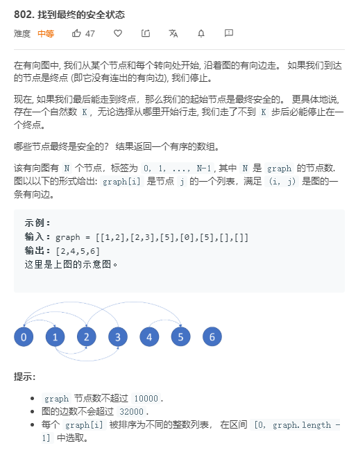

图 1.用打表法解题
这是一道有向图题，判断[u,v]中u是否是v的前驱（本质是求有向图两点是否存在通路）。用DFS会导致超时，直接用打表法。
1 2 3 4 5 6 7 8 9 10 11 12 13 14 15 class Solution : def checkIfPrerequisite (self, n: int, prerequisites: List[List[int]], queries: List[List[int]]) -> List[bool]: dp = [[False ] * n for _ in range(n)] for p, c in prerequisites: dp[p][c] = True for i in range(n): for j in range(n): for k in range(n): if dp[j][i] and dp[i][k]: dp[j][k] = True ans = [] for i, j in queries: ans.append(dp[i][j]) return ans
2.拓扑排序法 
本质是求有向图中，一个点是否在环中或能否走进环中。
拓扑排序思路：
对于一个节点 u，如果我们从 u 开始任意行走能够走到一个环里，那么 u 就不是一个安全的节点。换句话说，u 是一个安全的节点，当且仅当 u 直接相连的节点（u 的出边相连的那些节点）都是安全的节点。
因此我们可以首先考虑没有任何出边的节点，它们一定都是安全的。随后我们再考虑仅与这些节点直接相连的节点，它们也一定是安全的，以此类推。这样我们可以将所有的边全部反向，首先所有没有任何入边的节点都是安全的，我们把这些节点全部移除。随后新的图中没有任何入边的节点都是安全的，以此类推。我们发现这种做法实际上就是对图进行拓扑排序。
1 2 3 4 5 6 7 8 9 10 11 12 13 14 15 16 17 18 19 class Solution : def eventualSafeNodes (self, graph: List[List[int]]) -> List[int]: q = collections.deque() rgraph = collections.defaultdict(list) for i,item in enumerate(graph): if not item: q.append(i) for j in item: rgraph[j].append(i) graph = list(map(set, graph)) safe = [False for _ in range(len(graph))] while q: j = q.popleft() safe[j] = True for i in rgraph[j]: graph[i].remove(j) if not graph[i]: q.append(i) return [i for i,v in enumerate(safe) if v]
3.深度优先搜索 同样是上一题，还可以用深度优先搜索的方法。（使用颜色来标记状态，使用一个一维数组color来表示颜色）
我们同样可以使用深度优先搜索的方法判断图中的每个节点是否能走到环中。对于每个节点，我们有三种染色的方法：白色表示该节点还没有被访问过；灰色表示该节点在栈中（这一轮搜索中被访问过）或者在环中；黑色表示该节点的所有相连的节点都被访问过，且该节点不在环中。
当我们第一次访问一个节点时，我们把它从白色变成灰色，并继续搜索与它相连的节点。如果在搜索过程中我们遇到一个灰色的节点，那么说明找到了一个环，此时退出搜索，所有的灰色节点保持不变（即从任意一个灰色节点开始，都能走到环中），如果搜索过程中，我们没有遇到灰色的节点，那么在回溯到当前节点时，我们把它从灰色变成黑色，即表示它是一个安全的节点。
1 2 3 4 5 6 7 8 9 10 11 12 13 14 15 16 17 18 19 class Solution (object) : def eventualSafeNodes (self, graph) : WHITE, GRAY, BLACK = 0 , 1 , 2 color = collections.defaultdict(int) def dfs (node) : if color[node] != white: return color[node] == BLACK color[node] = GRAY for nei in graph[node]: if color[nei] == BLACK: continue if color[nei] == GRAY or not dfs(nei): return False color[node] = BLACK return True return filter(dfs, range(len(graph)))
可以证明： 如果一个点是安全的，则在访问其他点时，这个点的颜色不可能为灰色（可能为白色，黑色）。因为刚访问到这个点时将这个点置为灰色，但马上dfs访问他的邻居，其邻居必然也是安全的，依次类推，直到dfs访问到没有出度的节点（终点），此时将路径上所有的点的颜色改为黑色。
4.Hierholzer 算法 Hierholzer 算法用来求欧拉路径 。当保证图是欧拉图（存在欧拉回路，不存在奇度定点的连通图）或者半欧拉图（存在欧拉路径，有两个奇度定点的连通图，此时一个为起点一个为终点）时，可以无脑利用dfs求欧拉路径。
Hierholzer 算法思想： 当给定的图一定有欧拉路径（回路）时，从一个合理的起始点出发，深度优先遍历整个图，遍历过的边都不得再遍历，直到遇到的第一个没有可遍历的邻居的顶点，这个顶点一定是某条欧拉路径的终点，把这个顶点“删掉”（实际上不用删，通过标记边已访问就可以不再访问它）后，下一次遇到的没有可遍历的邻居的顶点，一定是这条欧拉路径倒数第二个顶点，再把这个顶点“删掉”再遍历，以此类推，直到把所有没有可遍历的邻居的顶点找到，我们就找到了这条欧拉路径上的所有顶点。
Hierholzer 算法过程 ：
选择一个合理的点作为起始点，遍历所有相邻边。
深度优先搜索，访问相邻顶点。将经过的边都不能再访问。
如果当前顶点没有相邻边，则将顶点入数组末尾。
最后将数组倒序输出，就是从起点出发的欧拉回路。
在这道题中，除了找到欧拉路径外还有个额外的要求，要输出字典序最小的欧拉路径。只要把邻居进行排序即可。
python代码：
1 2 3 4 5 6 7 8 9 10 11 12 13 14 15 16 17 class Solution : def findItinerary (self, tickets: List[List[str]]) -> List[str]: graph = collections.defaultdict(list) for u,v in tickets: graph[u].append(v) for k,v in graph.items(): v.sort(reverse=True ) ans = [] def dfs (v) : while graph[v]: dfs(graph[v].pop()) ans.append(v) dfs("JFK" ) return ans[::-1 ]
C++代码：
1 2 3 4 5 6 7 8 9 10 11 12 13 14 15 16 17 18 19 20 21 22 23 24 25 26 27 28 29 30 31 32 33 34 35 36 37 38 39 40 41 42 class Solution {public : typedef unordered_map <string , map <string , int >> adjacent; vector <string > min_path; bool dfs (adjacent &adj, string airport) for (auto &[next, number] : adj[airport]){ if (0 >= number) continue ; --number; dfs(adj, next); } min_path.push_back(airport); return true ; } vector <string > findItinerary(vector <vector <string >>& tickets) { adjacent adj; for (auto & t : tickets){ if (adj.find (t[0 ]) == adj.end ()) adj[t[0 ]] = map <string , int >(); if (adj[t[0 ]].find (t[1 ]) == adj[t[0 ]].end ()) adj[t[0 ]][t[1 ]] = 0 ; adj[t[0 ]][t[1 ]]++; } dfs(adj, "JFK" ); std ::reverse(min_path.begin (), min_path.end ()); return min_path; } };
5.带权值的并查集
这是一道带权值的并查集例题。
以往的并查集只管连通性，边是无权的。在这里可以把边的权重设为节点/父节点的值。
对queries中的每个方程组，查询a，b是否连通，若不连通，返回-1；若连通，返回二者的商。
这里求a/b，由于a，b连通，也意味着有共同的root，也就是可以用(a/root)/(b/root)来求出a/b的值，因此可以考虑在find的时候返回a/root（因为find要从a遍历到root，把路径的上的边权相乘就得到了a/root）。
同样在union时，知道了a/root1, b/root2，此时要设par[root1] = root2，因此要改变weights[root1]的值，改变为root1/root2，可以通过(root1/a)*(a/b)*(b/root2)来获得。
1 2 3 4 5 6 7 8 9 10 11 12 13 14 15 16 17 18 19 20 21 22 23 24 25 26 27 28 29 30 31 32 33 34 35 36 37 38 39 40 41 42 43 44 45 46 47 48 49 50 51 52 53 class UnionFind (object) : def __init__ (self) : self.par = {} self.weights = {} def find (self, x) : if x not in self.par: return ["" , -1.0 ] w = 1.0 while x != self.par[x]: w *= self.weights[x] x = self.par[x] return [x, w] def union (self, x, y, x_y) : root_x, w_x = self.find(x) root_y, w_y = self.find(y) if root_x=="" or root_y=="" or root_x == root_y: return self.par[root_x] = root_y self.weights[root_x] = 1 /w_x*x_y*w_y class Solution (object) : def calcEquation (self, equations, values, queries) : """ :type equations: List[List[str]] :type values: List[float] :type queries: List[List[str]] :rtype: List[float] """ uf = UnionFind() for a,b in equations: if a not in uf.par: uf.par[a] = a uf.weights[a] = 1 if b not in uf.par: uf.par[b] = b uf.weights[b] = 1 for i,(a,b) in enumerate(equations): uf.union(a, b, values[i]) res = [] for a,b in queries: root_a, w_a = uf.find(a) root_b, w_b = uf.find(b) if root_a=="" or root_b=="" or root_a != root_b: res.append(-1.0 ) else : res.append(w_a/w_b) return res
这道题也可以利用打表法来做，非常直接，也能AC。
6.广度优先搜索
这是一道求出发点到所有点红蓝交替最短路径问题，最短路可以用Dijkstra算法解决，因此首先考虑广度优先搜索。由于这道题涉及到红蓝交替路径，因此用两个表来分别存储红色邻居和蓝色邻居。由于存在重边（可能不同色），因此需要用一个visited集合来标记已经经过的边。因为是最短路，所以已经经过的边不可能再经过一次。
1 2 3 4 5 6 7 8 9 10 11 12 13 14 15 16 17 18 19 20 21 22 23 24 25 26 27 28 29 30 31 32 33 34 35 36 37 38 39 40 41 42 43 44 class Solution : def shortestAlternatingPaths (self, n: int, red_edges: List[List[int]], blue_edges: List[List[int]]) -> List[int]: q, res = collections.deque(), [-1 ]*n red_nei, blue_nei = collections.defaultdict(list), collections.defaultdict(list) RED,BLUE = 0 ,1 visited = set() for u,v in red_edges: red_nei[u].append((v)) if u==0 : q.append((v, RED, 1 )) visited.add((0 ,v,RED)) res[v] = 1 for u,v in blue_edges: blue_nei[u].append((v)) if u==0 : q.append((v, BLUE, 1 )) visited.add((0 ,v,BLUE)) res[v] = 1 while q: v,color,l = q.popleft() if color==RED and v in blue_nei: for node in blue_nei[v]: if (v,node,BLUE) not in visited: visited.add((v,node,BLUE)) q.append((node, BLUE,l+1 )) if res[node] == -1 : res[node] = l+1 elif color==BLUE and v in red_nei: for node in red_nei[v]: if (v,node,RED) not in visited: visited.add((v,node,RED)) q.append((node, RED, l+1 )) if res[node] == -1 : res[node] = l+1 res[0 ] = 0 return res
本文链接： http://clownw.github.io/%E5%9B%BE/